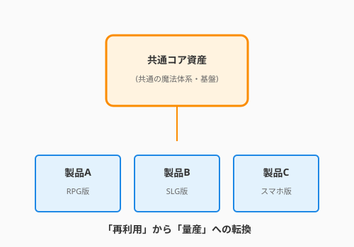

5.4 【外伝】万変の魔導書——ソフトウェアプロダクトライン
導入: 一つの成功から、千の多様性へ
リファクタリングの修行を積んだアルケミストは、やがて一つの壁に突き当たります。「目の前のコードは綺麗になった。しかし、似たような別のプロダクトを作るたびに、コードをコピー＆ペーストして少しだけ書き換える作業を繰り返していないか？」という壁です。
私たちが育ててきた QuestForge が大評判となり、「騎士団専用の重厚な管理システム」や「魔法学院向けの学習支援システム」といった、派生プロダクトの依頼が殺到したと想像してください。
それぞれのソースコードをバラバラに管理（クローン）すれば、バグ修正や機能改善のたびに、すべてのコードを渡り歩く地獄が待っています。この難題を解決する高度な錬金術、それがソフトウェアプロダクトライン（SPL）です。

1. 共通の核（コア資産）と変幻する頁
SPLの本質は、システムを「コア資産（Core Assets）」と「可変性（Variability）」に明確に分離することにあります。
- コア資産（真理の頁）: どのプロダクトでも変わらない、共通のビジネスルールやデータ構造。QuestForgeで言えば「クエストの完了判定」や「経験値の計算ロジック」です。
- 可変性（選択の印）: プロダクトごとに切り替える機能やUI。例えば「騎士団版のみに存在する上官への報告機能」や「魔法学院版だけの試験評価システム」などです。
リファクタリングを通じて、単一のプロダクトからこれらを抽出していく作業は、あたかも一つの重厚な魔導書を、ページを差し替え可能な「バインダー式の魔導書」へと組み替えるようなものです。
2. 派生から量産へ：リファクタリングの戦略
最初から完璧なプロダクトラインを設計するのは奥深い挑戦です。多くの場合、SPLは以下のリファクタリング・ステップを経て誕生します。
ステップ1: 共通項の括り出し（抽出）
複数の派生プロダクトを比較し、重複しているロジックを共通ライブラリやベースクラスへと吸い上げます。
ステップ2: 変化点のカプセル化（プラグイン化）
プロダクトごとに異なる部分を、第2章で学んだ「Strategyパターン」や「依存性注入（DI）」を使って、外から差し替えられるようにリファクタリングします。
ステップ3: フィーチャーモデルの構築（設計）
「どの機能とどの機能が共存できるか」を整理します。
- 「騎士団版」なら A機能とB機能は必須、C機能は禁止。
- 「一般向け」なら A機能のみ。 このように、機能の組み合わせ（レシピ）を定義することで、設定一つでプロダクトを構成（ビルド）できるようにします。
3. アルケミストの報酬：高品質な量産
プロダクトラインを構築する最大のメリットは、「一つの修正が、すべての派生製品に恩恵をもたらす」ことです。
コア資産のバグを直せば、それを利用する騎士団版も、学院版も、一般版も、同時に浄化されます。また、新しい魔法（機能）を追加する際も、コア資産に実装すれば、すべてのプロダクトで即座に利用可能になります。
これは、リファクタリングが「コードを綺麗にする」という目的を超えて、「ビジネスの機動力を極限まで高める」という戦略的な武器に進化した姿なのです。
まとめ：彫刻から金型へ
リファクタリングの初期段階は、一つの石を丁寧に磨き上げる「彫刻」のような作業です。しかし、経験を積んだアルケミストは、その彫刻を「美しい金型（プロダクトライン）」へと昇華させます。
「一つを作って終わり」ではなく、「共通の魂を持つ種族（プロダクトファミリー）」を育てる視点を持つこと。それが、複雑な現代の魔法世界を生き抜くための、高度な設計思想なのです。
コラム：QuestForgeの多世界解釈
もし QuestForge をプロダクトライン化するなら、以下のような「レシピ」が考えられます。
- ベース: ユーザー管理、クエストDB、進捗計算。
- バリエーション点:
- 報酬システム: 「金貨（一般向け）」「名誉勲章（騎士団向け）」「単位（学院向け）」
- 協力プレイ: 「なし（ソロ版）」「パーティ組成（ギルド版）」
これらをソースコードを汚さずに切り替えられるようになった時、あなたのリファクタリング技術は真のマスターレベルに達したと言えるでしょう。